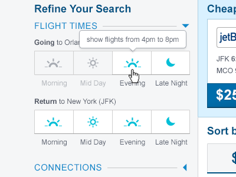
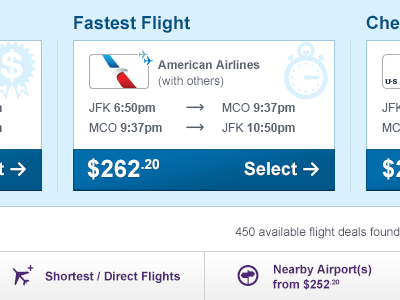
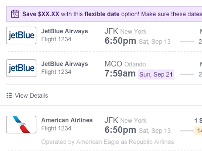
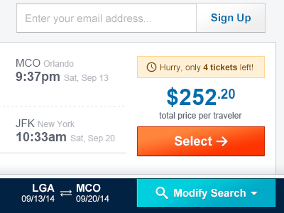

Project Goals
CheapOair's homepage redesign brought attention to the site and was a huge boost to conversion, but the rest of the flight booking funnel felt antiquated in comparison. I led the redesign effort to bring the Listing Page into the modern era. Along with a visual refresh to maintain consistency, I aimed to improve conversion rate, speed customer choice, and create a standardized modular display for more legible search results.
Using What We Know
Leveraging user tests along with an extensive library of prior A/B test results helped guide the direction of this redesign. The combined data helped identify pain points for many users which ended in lost conversions. In addition, an analysis of the more modern designs utilized by our competitors helped keep the page in line with user expectations.
Through user interviews, I discovered that the transition from the visually new home page to the listing page was jarring for most users. Further, there was room for improvement in explaining and highlighting the unique features of our flight search, such as Flexible Date and Nearby Airport fares, which was viewed as a competitive advantage.
Old and Rusted
The flight listing page was in a dismal state; a severe bottleneck in the conversion funnel. Woefully outdated, it had become a victim of "dollar store design" over its many years on the site. As features were been added, it simply had not been able to accommodate them. A full redesign was necessary.
Starting From Scratch
The initial concept was completely unlike the existing page. The design visually tied together the new home page with the search results, listing flights in a clean, consistent, and scannable way. Filters were given a similar treatment, various controls and settings were now consistent and expandable.
Aside from visual design, I attempted to incorporate as much research and new features as possible. It leveraged learnings from existing data and testing results such as simpler price display, orange calls-to-action, and compact fare display. It also incorporated many new features that were on the planned development roadmap, such as the "Easy Pick" matrix and fixed footer.
Iterating on Feedback
As I shopped the new design around the organization, the design became more refined. The layout was expanded to give a wider, more prominent display to the fares. Special messaging, such as flexible dates and urgency were given a standardized and clean display that enhanced legibility and made comparisons easier.
The Final Concept
The final design solidified prior ideas of simplification and standardization, with a few additions. It highlighted the search refinement options to speed the process. The Fare Alert signup form has been moved in line with the fares for ease of use. And lastly, tabbed recent searches were added to the fixed footer with modify search available as a toggle.
The Nitty Gritty
Here's a quick rundown of the details that shaped this interface:
-

Simplified Filters
Most searches yield an overwhelming amount of results. Leveraging existing research on how users refine their searches, I designed simplified filters to ease the process.
-

Easy Pick Matrix
The existing page's Fare Matrix was an overwhelming spreadsheet of information. Here, we intelligently present a few flights that would be most commonly prefered by customers.
-

Streamlined Fare Display
Each fare has been made much easier to read, given ample space, and has consistency in messaging to help customers scan through information and compare flights.
-

Tabbed Recent Searches
Data showed that customers search 3-4 times before selecting their flight. The fixed footer allowed the user to quickly jump back to previous searches or start a new search.
The Results
We took a phased approach to both ease users into the transition and to keep better track of the success of the redesign. After the first phase was rolled out, there was an over 10% increase in conversion over the previous design. Since it was designed with responsive considerations in mind, larger gains were seen among tablet and mobile users.
Due to its success, a planned second phase was due to include the simplified fare design and other enhancements.
What I Learned
A first impression is only as good as the entire first experience. Although the CheapOair homepage was modern and inviting, many conversions were lost due to a stark contrast in polish and overall design when continuing throughout the booking process. Maintaining consistency in the end-to-end experience is essential to gaining user trust and loyalty.